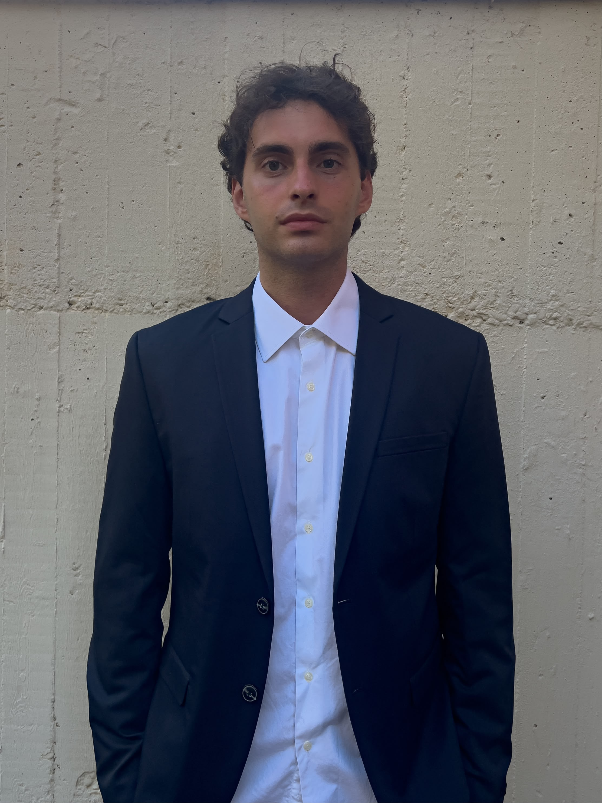

{{ job.role }}
{{ job.company }}
{{ job.period }} · {{ job.place }}
{{ job.text }}

{{ t.expTitle }}
{{ job.company }}
{{ job.period }} · {{ job.place }}
{{ job.text }}
{{ t.skillsTitle }}
{{ s.level }}
{{ s.how }}
{{ t.projTitle }}
{{ p.tag }}
{{ p.text }}
{{ t.eduTitle }}
{{ e.years }}
{{ e.school }}
{{ e.grade }}
{{ l.name }}
{{ l.level }}
{{ t.pasTitle }}
{{ t.pasLede }}